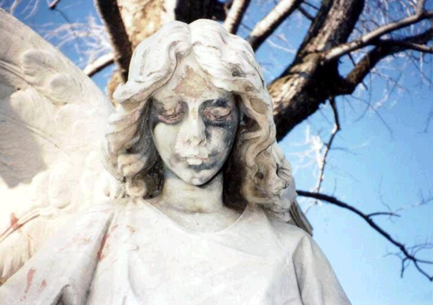
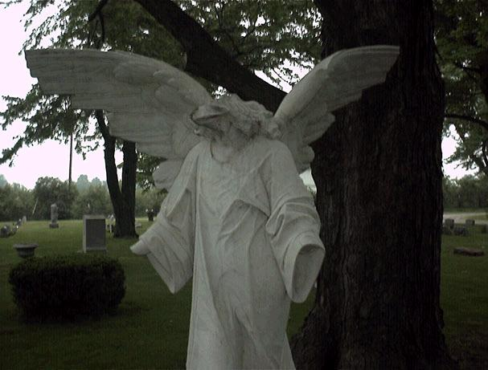
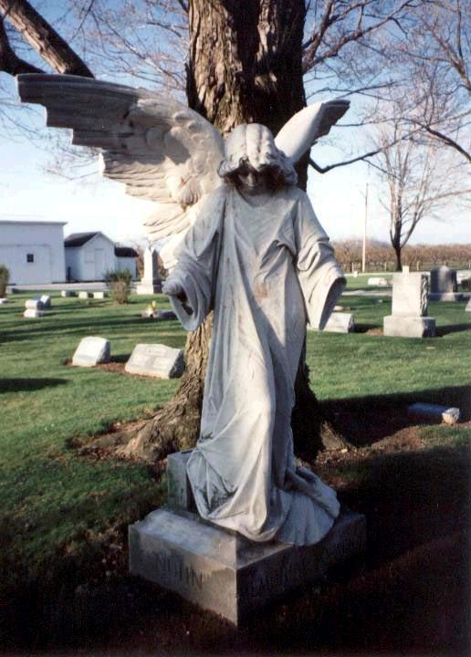

Maple Grove Cemetery

A well-known Ohio haunting is the "death angel" of Maple Grove Cemetery near Vermilion. The angel statue is said to be cursed, or haunted, or both, and if you stared into its eyes they would glow and you would die shortly thereafter. Naturally, vandals stole its head, so then it was the headless death angel. A ridiculous variation I once heard includes the fact that the kids who stole the head immediately died in a car accident.

Because so many kids journeyed there to hunt ghosts and smoke pot at night (and because it looked so bad with no head), the caretakers actually removed the entire statue. Is the cemetery still haunted? Maybe. You can find Maple Grove Cemetery at Mason and Cemetery Roads, just west of Route 60.

Finally, a bit of advice: Don't confuse this statue with the other, better-known Angel of Death at Cleveland's Lake View Cemetery. Do go to Lake View and see one of the most beautiful pieces of cemetery art in the world guarding the Haserot family plot. (And while you're at it, pose for a picture with the Haserot Angel and send it to me for Forgotten Ohio's Wall of Death Angel Selfies.)

Back